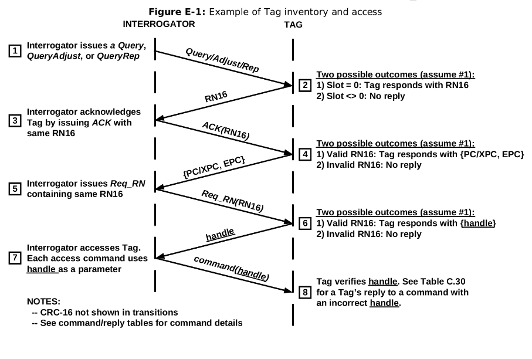

Conformance Tester for Tags EPC-GEN2 UHF RFID¶

- Students:
- Alexandre Almeida Edington (alexandreedington@gmail.com)
- Bruno Signorelli Domingues (brunao.signorelli@hotmail.com.br)
- Lucas Leal Vale (lucaslealvale01@gmail.com)
- Rafael Dos Santos (rafael_1999_@hotmail.com.br)
- Course: Computer Engineering
- Semester: 8th
- Professor Advisor: Rafael Corsi Ferrão (rafael.corsi@insper.edu.br)
- Mentor: Wallace Shepherd Pitts (wspitts2@ncsu.edu)
- Year: 2021
- Repository URL: https://github.com/pfeinsper/21b-indago-rfid-conformance-tester
About¶
This project's objective is to develop an equipment capable of performing a series of tests on RFID tags, based on the communication protocol "EPC-GEN2 UHF RFID" 1. Such equipment will be of value in simplifying the development of new tags that need to conform to the established protocol, being able to assert whether the tag satisfies the requirements of the aforementioned protocol, and also whether the tag itself is working as intended.
Insper¶
This project was developed by four computer engineering students at "Insper Instituto de Ensino e Pesquisa" 2, who worked together with "Indago Devices Inc." 3. As part of the engineering completion of course work, the students must choose between a variety of projects proposed by different companies, choosing one that attracts their interest. Once the groups and projects are settled, the students work together with a representative of the company who proposed the project in order to find and implement a solution. For each group of students there is also a professor advisor which aids the group with matters of communication, organization, meetings and project/report feedbacks.
Indago Devices Inc.¶
Indago Devices Inc. is a startup that has its headquarters in the city of Birmingham, Alabama, US, and works in the field of development and study of electronics. Despite having few employees, it seeks to innovate in the electronics market, specifically in the development of systems that communicate through RFID.
They had already been conversing with Insper in the first half of 2021, with another group of students who planned to do a similar project. On the second half of 2021, they decided to follow up with a conformance tester to assist the development of RFID tags. One of the driving points of the project is that the currently existing solutions are proprietary, and there is no open-source alternative available for the RFID community. Hence, they opted to make one, so it could positively impact not only their company, but also the worldwide RFID development community.
Project Overview¶
The main objective of this project is to develop and assemble a conformance tester for RFID tags where a microcontroller will be implemented together with an IP core for communication with the DUT (device under testing). This device then shall be able to run a series of tests as a reader interacting with a tag through the EPC-GEN2 protocol, analyzing if the tag works as intended and complies with the requirements of the protocol.
The tests will be implemented using the C programming language, allowing for a variety of tests to be created, each test targeting different aspects of the tag's processing, independently evaluating most of them. Also, the tests are customizable, being possible to edit or develop new ones, should the user need it.
It is important to highlight that this project does not make use of RFID communication, nor does it intend to test whether the tag is able to communicate through it. Given the complexity of communicating through radio waves, the group and the professor agreed to not cover those points in this project. Therefore, the device, tag and computer shall be connected by cables.
For more information on the architecture, the RTL diagram generated by Quartus can be found here.
Protocol EPC-GEN2 UHF RFID¶
Documentation avaliable on: https://www.gs1.org/sites/default/files/docs/epc/Gen2_Protocol_Standard.pdf
The main purpose of the protocol is to allow two independently obtained pieces of hardware (that adhere to the protocol) to communicate flawlessly. To achieve this, it specifies how physical and logical interactions should take place, as well as the possible commands between reader and tag.
To claim compliance with the protocol, a reader (also called interrogator) must meet all required specifications, having implemented all mandatory commands, be able to encode, send, receive, and decode data so that it can communicate with a tag, as well as comply with all local government radio regulations. Optionally, it is allowed to implement any number of optional commands defined in the protocol and any other private commands that do not conflict with any of the mandatory ones. Finally, a reader must not require a tag to be able to process any command that is not specified as mandatory in the protocol.
To claim compliance with the protocol, a tag must meet all required specifications, having implemented all mandatory commands, be able to modulate a response signal after receiving a command from a reader, and comply with all local government radio regulations. Optionally, it is allowed to implement any number of optional commands defined in the protocol and any other private commands that do not conflict with any of the mandatory ones. Finally, the tag must not require a reader to be able to process any optional command from the protocol and is not allowed to modulate a response signal unless it has been commanded to do so by a reader using the commands present in the protocol.
The EPC-GEN2 UHF RFID allow four types of commands in its documentation:
- mandatory;
- optional;
- proprietary;
- custom.
All commands defined in the protocol are either mandatory or optional. Proprietary and custom commands are manufacturer-defined. Mandatory commands should be be supported by all tags and readers that claim compliance to the protocol.
Optional commands may or may not be supported by tags or readers. If any implements optional commands, then it shall do so in the manner specified in the protocol.
Proprietary commands may be enabled in conformance with the protocol but are not specified in it. All proprietary commands shall be capable of being permanently disabled. Proprietary commands are intended for manufacturing purposes and shall not be used in field-deployed RFID systems.
Custom commands may be enabled in conformance with the protocol but are not specified in it. A reader shall issue a custom command only after singulating a tag and reading (or having prior knowledge of) the tag manufacturer’s identification in the tag’s TID memory. A reader shall use a custom command only in accordance with the specifications of the tag manufacturer identified in the TID. A custom command shall not solely duplicate the functionality of any mandatory or optional command defined in the protocol by a different method.
Mandatory Commands¶
Selectselects the population of tags that will be communicated with. The set can be defined by intersection, union or negation of tags;Query / Query Adjust / Query Repstarts a communication round between the tags and reader, deciding which tag will participate in the round and sending the Q value for such.Query Adjustcan adjust que Q value for the tag.Query Repdecreases the value of Q stored within the tag’s memory by 1;ACK / NAKis sent to the tag with the same value sent by the tag when returning to theQuerycommand. It signifies the reader recognized the tag’s response.NAKchanges the state of the tags involved in the round toarbitrate, in which they remain as stand-by;Req_RNrequests a new random number (RN16), sending the previous one as authentication;Read / Writerequests the reading of information within a specified address in the tag’s memory bank.Writesends information to be written in that address instead;Kill / Locksets the tag as unusable. It is a way to end the communication so that the tag no longer responds.Lockcan lock or unlock portions of the tag’s memory bank forWriteaccess.
Handshake¶
The diagram below can be found in annex E of the EPC-GEN2 documentation and represents the handshake between reader and tag.
 EPC UHF Gen2 Air Interface Protocol, p 138
The reader sends a Query (1), to start an inventory round with the tag. Upon recognizing the inventory round, the tag checks whether to respond, and responds with a 16-bit random number RN16 (2). To establish the communication as successful, the reader sends the ACK (3) containing the same RN16. Having received and validated the confirmation, the tag responds with PC/XPC, EPC (4). The reader then send a Req_RN (5), again with the old RN16, requesting a new RN16 to continue the communication. If the tag again validates the RN16, it responds with the handle (6), a new RN16. Once the reader receives the handle, the handshake is effectively over and the handle will be used as authentication for all communication from that point forwards. Every command (7) will be sent together with the handle and tag will always verify the handle before responding (8).
Tari¶
The reference time interval for a package in the reader to be sent to the tag. The acronym TARI derives from Type A Reference Interval.
According to the EPC-GEN2 protocol, section 6.3.1.2.4, p 27:
Interrogators shall communicate using Tari values in the range of 6.25μs to 25μs. Interrogator compliance shall be evaluated using at least one Tari value between 6.25μs and 25μs with at least one value of the parameter x. The tolerance on all parameters specified in units of Tari shall be +/–1%. The choice of Tari value and x shall be in accordance with local radio regulations.
This time reference dictates the whole communication and guarantees its conformance.
State-of-the-Art Review¶
The market currently has a variety solutions regarding RFID technology. Among the options currently available, proprietary equipment and products dominate the market, as they are developed by well-established companies. A example of these companies is CISC semiconductor 4, whcih specializes in RFID and NFC services, and working both in the production of laboratory equipment and product testers for the market. Another company that is worth mentioning is HID global 5, which has several solutions for RFID tags end operates worldwide under sales and distribution of these products.
There are, however, other solutions present in the market, such as open-source solutions. As proprietary products are expensive and not easily customizable/reproduceable, some users choose to develop their own version of those products, leaving them open for others to use and improve. The use of open-source helps to develop a highly customizable and reproduceable product, as any user can download the project's files and make their own changes to better suit their need. Another benefit of open-source is the collaboration aspect, where users around the world can suggest changes or improvements, as well as implement them to improve the overall product quality.
An example of an open-source product is the WISP5 6 tag, initially developed at the University of Washington 7. The WISP is a battery-free platform with a software-defined implementation of a passive RFID tag, that can communicate with commercial-off-the-shelf RFID readers and is powered by the carrier signal emitted by the reader. It is also built from low-cost components commonly found in hardware stores, allowing WISP users to fabricate their own tags if desired.
Another open-source product is the S.U.R.F.E.R. (Software-defined UHF RFID Flexible Economical Reader) 8, an RFID reader. It operates with the same technology as the WISP5 tag, enabling readings up to 60 feet (20 meters) away. Due to it being software-defined, the reader is highly versatile, as the user can input the specifications of the desired tag into the software. It also has a relatively simple structure to find, which result in a low-cost product.
Open-source products bring a series of benefits to the users, such as:
- reduced hardware and software costs, due to the products being intentionally built to be easily accessible;
- simple licensing management because they often are free to use and impose no restrictions at all;
- abundant support, as there are many companies that develop open-source products and offer both free and varied levels of paid support.
Given these advantages, Indago Devices opted for a completely open-source product as well. In a meeting with our mentor Wallace Shepherd Pitts, he mentioned he had previously researched and studied some of the options currently available, but none of them had the features he had in mind, mostly because they offered little room for customization regarding the tag testing.
The direct competitors of our project would be the previously mentioned products. However, as the team is aiming for an open-source solution, the project may attract users interested in a more accessible/customizable product.
Another point mentioned by the mentor is that he also intends to use the project as study material for students at the University of North Carolina 9, which consequently opens up possibilities for further expansion of the product.
Methodology¶
During the first weeks of the project, the group settled on definitions and agreements on what would be the methodology used throughout the semester, as well as the different tools and softwares that would be used.
The platform GitHub10 was chosen as the method for sharing the code between the group members and the professor, as it can store many important files other than code files, such as diagrams and images the group would produce for the project. Another feature often used by the group is the creation of issues, which can help define and order the group’s next tasks and assign members to complete them.
The day-to-day communication between the members were done through Discord11, and meetings with Indago’s representative/mentor or Insper's coordinators though Microsoft Teams12. As meetings with the mentor were infrequent, taking place every fortnight, the group usually kept a list of questions and issues about the EPC-GEN2 protocol and the project in general so that the representative could provide some support.
Documents and reports were produced and stored in Google Drive13, so that multiple members could work on them simultaneously, and also be accessed by the professor to provide insights and feedback. It also served as another backup storage to the Github repository, in case any problems occurred.
The programming languages VHDL and C were used throughout the project, and the Intel® Quartus® Prime FPGA Design Software14 was used in conjunction with the Nios® II Software Build Tools for Eclipse15 plugin, which supports simulations and tests that assisted in the development process, as well as the ModelSim*-Intel® FPGA Edition Software16, widely used for testing VHDL component codes. As the client specified that he wanted the project to be open-source, all code, reports and images relevant to this will also be available on the project’s public GitHub repository.
Considering the project consists of the creation of a conformance tester for the EPC-GEN2 UHF RFID protocol, its documentation was widely used, researched, and discussed by all members of the group during the project, focusing mainly on the communication sections between the reader and tag, as well as encoding data, and mandatory commands for protocol standards.
Given the project's open-source nature and its public availability on GitHub, it was decided that the group would also provide a documentation to the whole project, which was later decided would be done using GitHub Pages17. Inside, the group would give an in-depth description of all components, a tutorial on how to clone, run, utilize and modify this project, and explanations for the hardware, the IP core18 interface and the firmware.
To further help with code documentation, the group used the Doxygen19 application, which was incorporated into the already existing GitHub Pages documentation. This application generates a page of every VHDL file, giving a brief explanation of the purpose of that component, as well as explain every aspect of the entity, including generics, ports in and outs.
Environment Tools¶
These are the tools used by the team in order to meet up, develop and design the project.
- Development:
- Intel® Quartus® Prime FPGA Design Software - v18.1.0.625
- Nios® II Software Build Tools for Eclipse
- Intel® FPGA Simulation - ModelSim
- Logic 2 Software20 - v2.3.39-master
- Design:
- Google Drive
- Discord
- Microsoft Teams
- Excalidraw21
-
EPC UHF Gen2 Air Interface Protocol. https://www.gs1.org/sites/default/files/docs/epc/Gen2_Protocol_Standard.pdf Accessed on: 16/08/2021. ↩
-
Insper Instituto de Ensino e Pesquisa. https://www.insper.edu.br/ Accessed on: 16/08/2021. ↩
-
Indago Devices Inc. https://indagodevices.com Accessed on: 16/08/2021. ↩
-
Cisc Semiconductors. https://www.cisc.at/ Accessed on: 20/09/2021. ↩
-
HID Global. https://www.hidglobal.com/products/rfid-tags Accessed on: 20/09/2021. ↩
-
WISP5 Wiki. https://sites.google.com/uw.edu/WISP-wiki/home Accessed on: 20/09/2021. ↩
-
University of Washington. https://www.washington.edu/ Accessed on: 20/09/2021. ↩
-
S.U.R.F.E.R. reader. https://openrfidreader.net/ Accessed on: 20/09/2021. ↩
-
University of North Carolina. https://www.uncg.edu/ Accessed on: 20/09/2021. ↩
-
GitHub website. https://github.com/ Accessed on: 16/08/2021. ↩
-
Discord. https://discord.com/ Accessed on: 16/08/2021. ↩
-
Microsoft Teams. https://www.microsoft.com/pt-br/microsoft-teams/group-chat-software/ Accessed on: 16/08/2021. ↩
-
Google Drive. https://www.google.com/intl/pt-BR/drive/ Accessed on: 16/08/2021. ↩
-
Intel® Quartus® Prime Software Suite. https://www.intel.com.br/content/www/br/pt/software/programmable/quartus-prime/overview.html Accessed on: 16/08/2021. ↩
-
Nios® II Software Build Tools for Eclipse. https://www.intel.com/content/www/us/en/support/programmable/support-resources/intellectual-property/ips-nios2-ide.html Accessed on: 16/08/2021. ↩
-
ModelSim*-Intel® FPGA Edition Software. https://www.intel.com.br/content/www/br/pt/software/programmable/quartus-prime/model-sim.html Accessed on: 16/08/2021. ↩
-
GitHub Pages. https://pages.github.com/ Accessed on: 16/08/2021. ↩
-
IP Core. https://www.intel.com/content/www/us/en/products/programmable/intellectual-property.html Accessed on: 23/08/2021. ↩
-
Doxygen documentation. https://www.doxygen.nl/index.html Accessed on: 01/10/2021. ↩
-
Logic 2 Software. https://www.saleae.com/downloads/ Accessed on: 01/10/2021. ↩
-
Excalidraw. https://www.excalidraw.com/ Accessed on: 01/10/2021. ↩